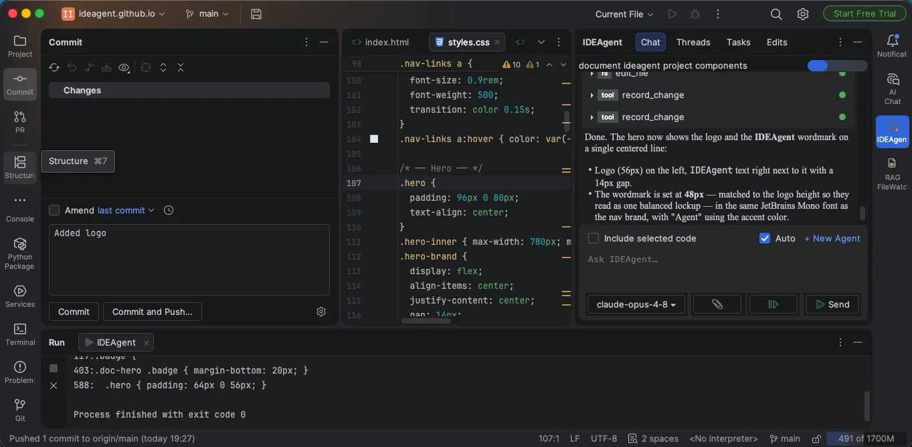
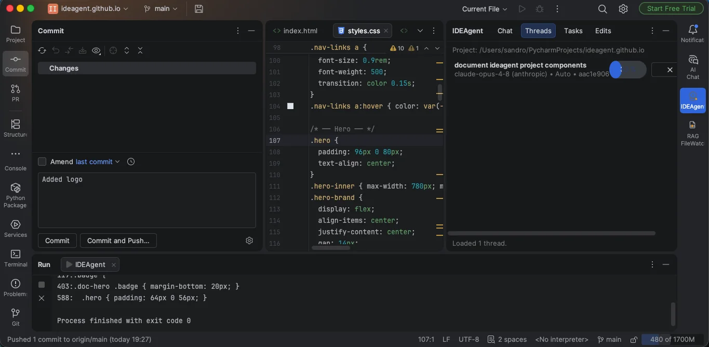
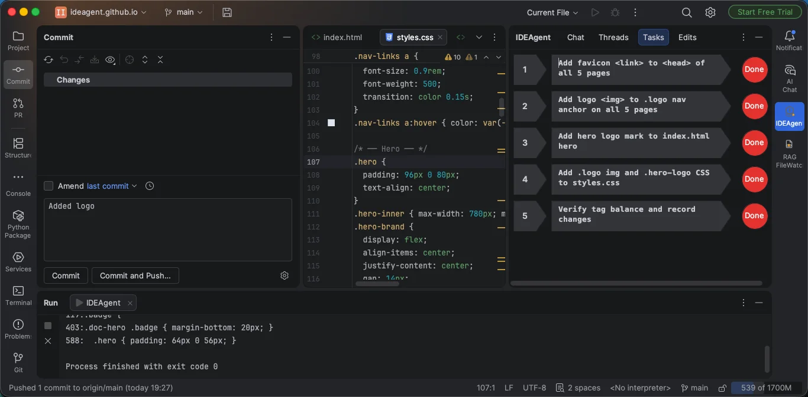
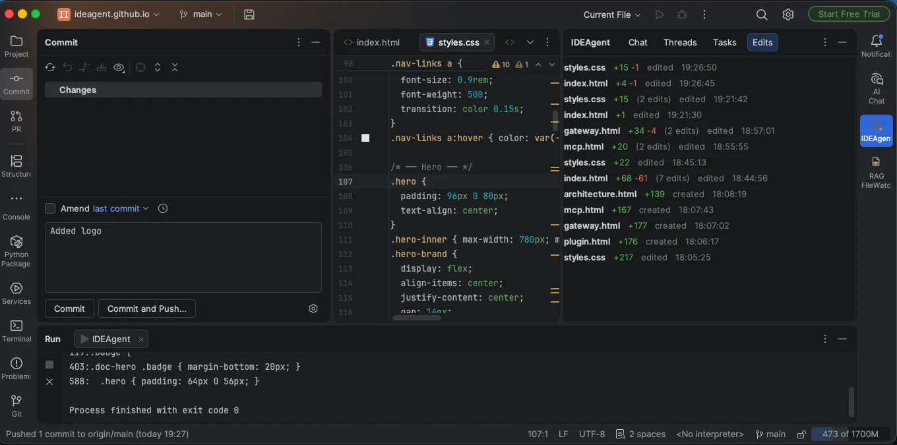
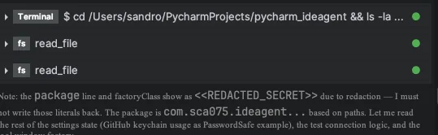

IDEAgent is a PyCharm coding agent you host yourself. Retrieval and context assembly run on your own machine, and you choose the model — fully local with Ollama, or your own OpenAI, Anthropic or Google keys. The whole stack — plugin, gateway, context engine and RAG — sends no product-usage telemetry back to us. When you want it, optional gateway redaction can filter detected secrets out of tool and terminal output. Built for developers and teams working on confidential code, including regulated fields like banking and medical software.




Now on the JetBrains Marketplace — install the plugin straight from your IDE.
Redaction keeps you sovereign over your own data by reducing what's transmitted to the
model. It's an optional per-thread setting you enable from the plugin — most useful when
you do use a cloud provider. With it on, it runs at the gateway, on your
machine, on the path out: it targets the read_file and terminal
tools specifically, because those are what surface real file contents and command
output into the transcript — the egress points where your data would otherwise leave your
machine. That output is scanned and rewritten before it's streamed to the agent or sent to
any provider, so the model reasons over <<REDACTED_*>>
placeholders for the values it detects. It filters detected secrets in that output — it
does not cover text you type or paste into the chat yourself.
<<REDACTED_IP_ADDRESS>>.
Retrieval, indexing and context assembly run on your own machine, in containers you host. The plugin talks only to the gateway you configure — default localhost.
The whole stack — plugin, gateway, context engine and RAG — sends no usage tracking, analytics or phone-home back to us. Outbound calls go only to the model provider you choose and to optional services you configure yourself. We also ship ChromaDB's built-in telemetry disabled by default.
Point it at Ollama and nothing leaves your infrastructure at all — no cloud provider, and nothing to redact because nothing is sent.
Provider API keys live in your machine's native keystore — not in config, not in the plugin binary, never persisted by the gateway.
Plenty of great cloud tools exist. IDEAgent is for when you'd rather keep the whole stack — and your code — on infrastructure you control.
They typically send code — or the context they build from it — to their cloud to do the work. If you'd rather that context be assembled on your own machine, IDEAgent does the retrieval locally and lets you run fully local with Ollama; when you do use a cloud model, optional redaction can filter detected secrets out of tool and terminal output first.
Zero-retention is a promise about what a provider does after receiving your data — the data still left your environment first. Running fully local with Ollama means it never leaves at all, so there's nothing to retain; and when you do use a cloud model, optional redaction can filter detected secrets out of tool and terminal output before it's sent.
Manual pasting is uncontrolled, unaudited egress — secrets and client identifiers go out with the snippet, and nothing tracks what you paste. IDEAgent keeps a human in the loop, assembles context locally, and — with redaction enabled — filters detected secrets out of tool and terminal output automatically rather than leaving it to memory and discipline.
Nothing wrong with it — a truly local model keeps context on the machine, which is exactly what IDEAgent does too. But a bare local model doesn't bring its own retrieval stack, and no single path to a stronger remote model like Claude or GPT the day you want one. IDEAgent's advantage is the integrated self-hosted stack: local retrieval, optional egress-side redaction when you do reach out, HITL, and free choice of provider — so "local" is the default, not the ceiling.
Local operation isn't a feature bolted onto a cloud tool — it falls out of running the whole stack in your own environment. These are the parts that make on-device context and optional egress-side redaction possible, and where to read how each works. Fully local works too: run Ollama so nothing leaves your infrastructure, though matching API-level models takes high-end hardware.
How the plugin, gateway, context engine and RAG fit together into one self-hosted, privacy-first agentic stack — with an end-to-end request walkthrough.
Start here →The in-IDE tool window — Chat, Threads, Tasks and Edits — with per-thread human-in-the-loop, the WebSocket protocol to the gateway, MCP settings and local voice. Runs the work on your machine; no code leaves except the window you construct.
Read →Containers running? Connect the plugin in four simple steps — gateway IP & port, the default MCP server, your provider or Ollama keys, then dedicated models. Includes an optional Whisper & Piper voice guide for Mac, Linux and Windows.
Get set up →The FastAPI + LangGraph deep agent that runs each turn, streams it to your IDE, enforces HITL, redacts secrets, coordinates peer agents (ACP) and calls the model provider you configure — OpenAI, Anthropic, Google or fully offline Ollama.
Read →The context engine is the relationship between the MCP server and the self-hosted RAG: symbol-aware retrieval (find_symbol / get_context / sync_rag) over local embeddings. It stays accurate because the file watcher re-syncs your files into the index on every record_change. Includes a local web GUI.
Read →Where does the work run, and what leaves your infrastructure? If you'd rather keep the code and the context on machines you control, this is the column that counts.
| Feature | IDEAgent | Cloud-only assistants |
|---|---|---|
| Runs on infrastructure you host | ✅ | ❌ |
| No product-usage telemetry back to the vendor (full stack) | ✅ | Varies by vendor |
| Context assembled on-device (self-hosted RAG) | ✅ | ❌ |
| Can run fully offline via Ollama | ✅ | ❌ |
| Optional redaction of secrets in tool / terminal output | ✅ | ❌ |
| No dependence on vendor retention promises (when local) | ✅ | Trust required |
| OpenAI, Anthropic, Google + local Ollama | ✅ | Limited |
The platform operates in customer-hosted environments, and certain implementation details are intentionally withheld for security reasons. This includes internal prompts, infrastructure topology, encryption mechanisms, and container communication patterns. We provide high-level architectural information where appropriate, but do not publish details that could compromise the security of customer deployments. If you have questions, discover a bug, or would like to request a feature, please use the templates below and we'll route your report to the appropriate team.